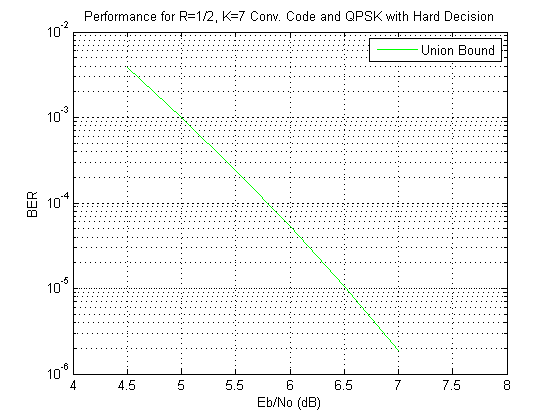
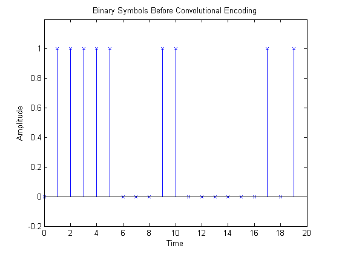
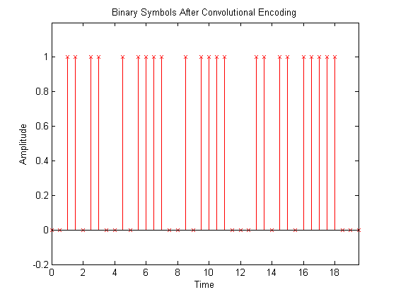
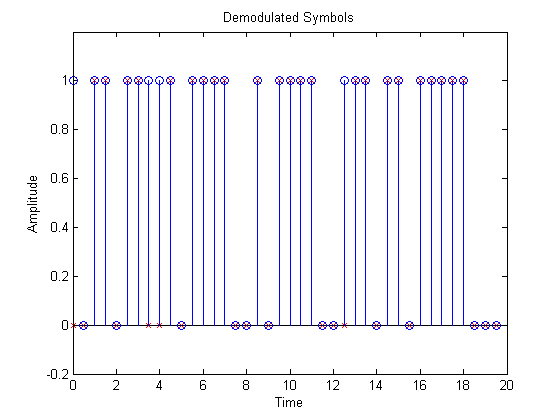
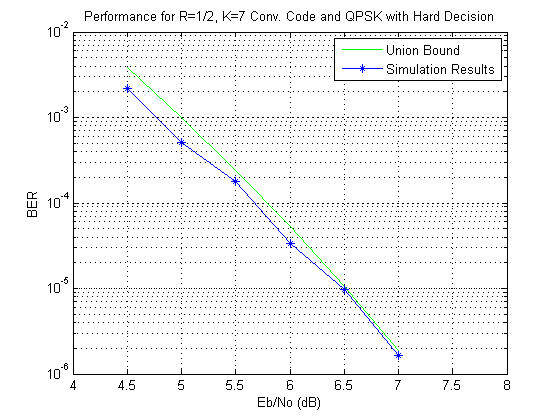

Convolutional Encoding and Viterbi Decoding
This demo shows how to use a convolutional encoder and decoder in a simulation of a communications link. It also shows the error correcting capability of convolutional codes. This demonstrates the convolutional trellis generator (POLY2TRELLIS), encoder (CONVENC), and decoder (VITDEC). It also demonstrates the use of functionalities such as INTDUMP, RECTPULSE, BITERR, BERCODING, RANDI, AWGN, MODEM.PSKMOD, MODEM.PSKDEMOD. Many of these functions are described in greater detail in the "Phase Shift Keying Simulation" demo. Finally, this demo displays empirical performance curves for QPSK with Gray coding using data generated by the example, viterbisim.m.
This demo shows how to simulate a QPSK communication system, and compares the error correction capabilities of convolutional encoding with the union bound performance estimates shown here. Use POLY2TRELLIS to generate the trellis of convolutional encoder with G = [171 133]. Calculate the distance spectrum with DISTSPEC, and the BER upper bound with BERCODING.
EbNo = 4.5:.5:7; linEbNo = 10.^(EbNo(:).*0.1); M = 4; codeRate = 1/2; constlen = 7; k = log2(M); codegen = [171 133]; tblen = 32; % traceback length trellis = poly2trellis(constlen, codegen); dspec = distspec(trellis, 7); expVitBER = bercoding(EbNo, 'conv', 'hard', codeRate, dspec); semilogy(EbNo, expVitBER, 'g'); xlabel('Eb/No (dB)'); ylabel('BER'); title('Performance for R=1/2, K=7 Conv. Code and QPSK with Hard Decision'); grid on; axis([4 8 10e-7 10e-3]); legend('Union Bound');
First start by setting parameters needed for the simulation. Then generate binary data using RANDI. We will also create a new random number stream with a known seed, so that we can repeat the results. The first 20 points of this data are plotted here.
numSymb = 100; numPlot = 20; Nsamp = 4; % oversampling rate EbNoDemo = 3; EsN0 = EbNoDemo + 10*log10(k); hStr = RandStream('mt19937ar', 'Seed', 654321); msg_orig = randi(hStr, [0 1], numSymb, 1); stem(0:numPlot-1, msg_orig(1:numPlot),'bx'); axis([ 0 numPlot -0.2 1.2]); xlabel('Time'); ylabel('Amplitude'); title('Binary Symbols Before Convolutional Encoding' ); legend off
Use CONVENC to encode the information symbols. This plot shows the coded symbols. Note that the encoded symbol rate is twice the information symbol rate.
msg_enc = convenc(msg_orig, trellis); numEncPlot = numPlot / codeRate; tEnc = (0:numEncPlot-1) * codeRate; stem(tEnc, msg_enc(1:length(tEnc)),'rx'); axis([min(tEnc) max(tEnc) -0.2 1.2]); xlabel('Time'); ylabel('Amplitude'); title('Binary Symbols After Convolutional Encoding' );
Use MODEM.PSKMOD object to Quaternary PSK (QPSK) modulate the signal. Set up the PSK modulator to accept bits and employ Gray encoding. Use RECTPULSE to implement pulse shaping. Then use AWGN to add noise to the transmitted signal to create the noisy signal at the receiver. The term, -10*log10(Nsamp), is used to scale the noise power with the oversampling. The term, -10*log10(1/codeRate), is used to scale the noise power to match the coded symbol rate. The in-phase and quadrature components of the noiseless QPSK signal are plotted.
hMod = modem.pskmod('M', M, 'PhaseOffset', pi/4, ... 'SymbolOrder', 'Gray', 'InputType', 'Bit'); msg_tx = modulate(hMod, msg_enc); msg_tx = rectpulse(msg_tx, Nsamp); adjSNR = EsN0 - 10*log10(1/codeRate) - 10*log10(Nsamp); msg_rx = awgn(msg_tx, adjSNR, 'measured', hStr, 'dB'); numModPlot = numEncPlot * Nsamp / k; tMod = (0:numModPlot-1) / Nsamp * k; plot(tMod, real(msg_tx(1:length(tMod))),'c-', ... tMod, imag(msg_tx(1:length(tMod))),'m-'); axis([ min(tMod) max(tMod) -1.5 1.5]); xlabel('Time'); ylabel('Amplitude'); title('Encoded Symbols After QPSK Baseband Modulation'); legend('In-phase', 'Quadrature');

Use INTDUMP and MODEM.PSKDEMOD to demodulate and detect the coded symbols. Set up the PSK demodulator to employ Gray decoding and output bits. The detected symbols are plotted in blue stems with circles and the original encoded symbols are plotted in red stems with x's. The red stems of the transmitted signal are shadowed by the blue stems of the received signal. Therefore, comparing the red x's with the blue circles indicates that the received signal is identical to the transmitted signal except for symbol at times 0, 3.5, 4, and 12.5.
hDemod = modem.pskdemod('M', M, 'PhaseOffset', pi/4, ... 'SymbolOrder', 'Gray', 'OutputType', 'Bit'); msg_rx_int = intdump(msg_rx, Nsamp); msg_demod = demodulate(hDemod, msg_rx_int); stem(tEnc, msg_enc(1:numEncPlot),'rx'); hold on; stem(tEnc, msg_demod(1:numEncPlot),'bo'); hold off; axis([0 numPlot -0.2 1.2]); xlabel('Time'); ylabel('Amplitude'); title('Demodulated Symbols' );
Then use VITDEC to decode the demodulated symbol stream. This demo uses hard decision ('hard') and the continuous decoding option ('cont') which causes a delay in the decoded stream of 32 symbols (traceback length = 32). Therefore the decoded data plot is shifted by 32 symbols to compensate for the decoder delay. The decoded symbols are plotted in blue stems with circles while the original (unencoded) symbols are plotted in red stems with x's. The red stems of the original signal are shadowed by the blue stems of the decoded signal. Therefore, comparing the red x's with the blue circles indicates that the decoded signal is identical to the original (unencoded) signal. The errors shown in the previous step in the detected symbols have been corrected.
msg_dec = vitdec(msg_demod, trellis, tblen, 'cont', 'hard'); stem(0:numPlot-1, msg_orig(1:numPlot), 'rx'); hold on; stem(0:numPlot-1, msg_dec(1+tblen:numPlot+tblen), 'bo'); hold off; axis([0 numPlot -0.2 1.2]); xlabel('Time'); ylabel('Amplitude'); title('Decoded Symbols' );

Finally, use BITERR to compare the original messages to the demodulated messages. BITERR is used to calculate the bit error rate. The error rates are calculated for both the channel and for the decoded bit stream.
[nChnlErrs BERChnl] = biterr(msg_enc, msg_demod); [nCodErrs BERCoded] = biterr(msg_orig(1:end-tblen), msg_dec(1+tblen:end));
This step displays results generated by BERTool with the example function, VITERBISIM. It demonstrates how to create a convolutional code simulation driver in MATLAB®. Since the empirical results will take time to generate, the results are loaded in from a previous simulation.
cla; load('vitsimresults.mat'); semilogy(EbNo, expVitBER, 'g', EbNo, ratio, 'b*-'); xlabel('Eb/No (dB)'); ylabel('BER'); title('Performance for R=1/2, K=7 Conv. Code and QPSK with Hard Decision'); axis([4 8 10e-7 10e-3]); legend('Union Bound', 'Simulation Results'); grid on;